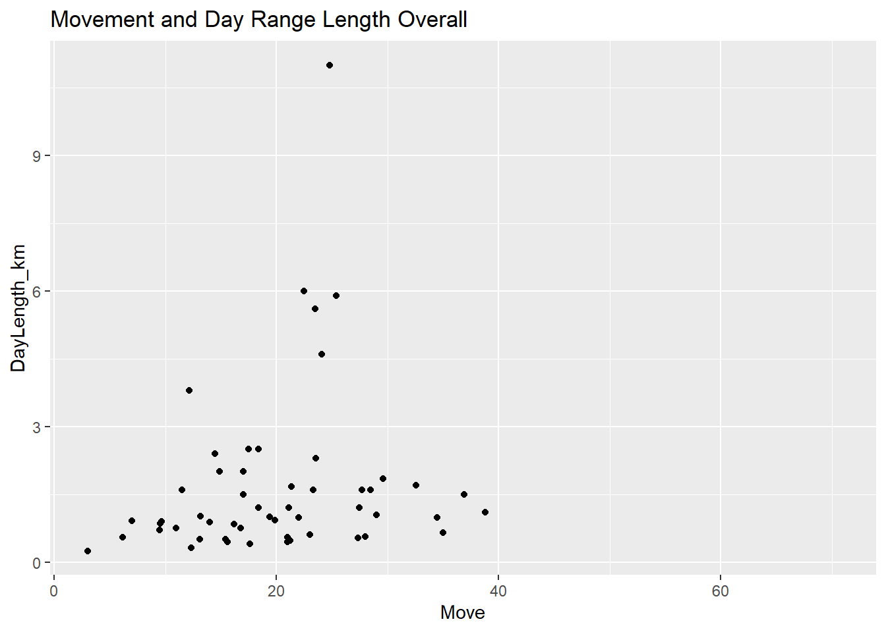
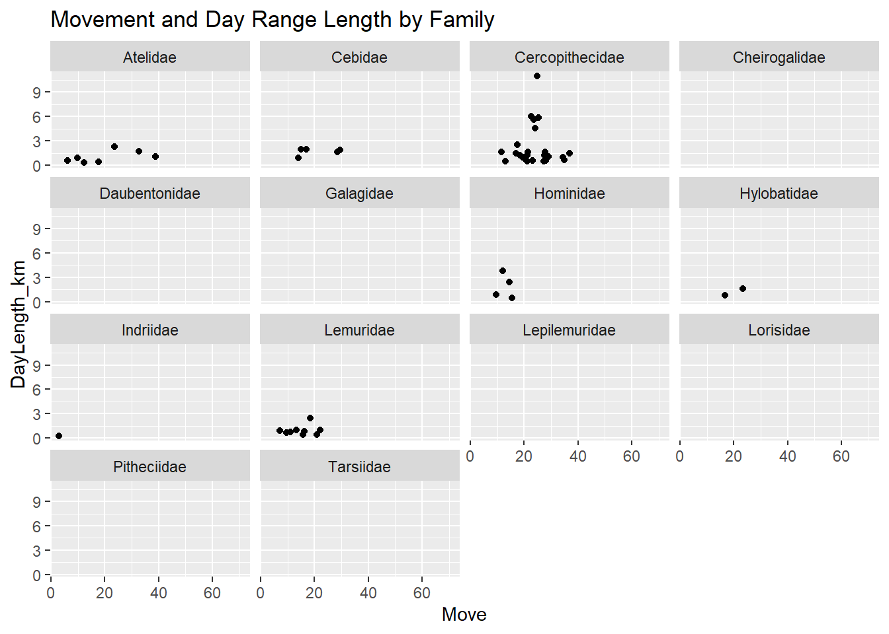
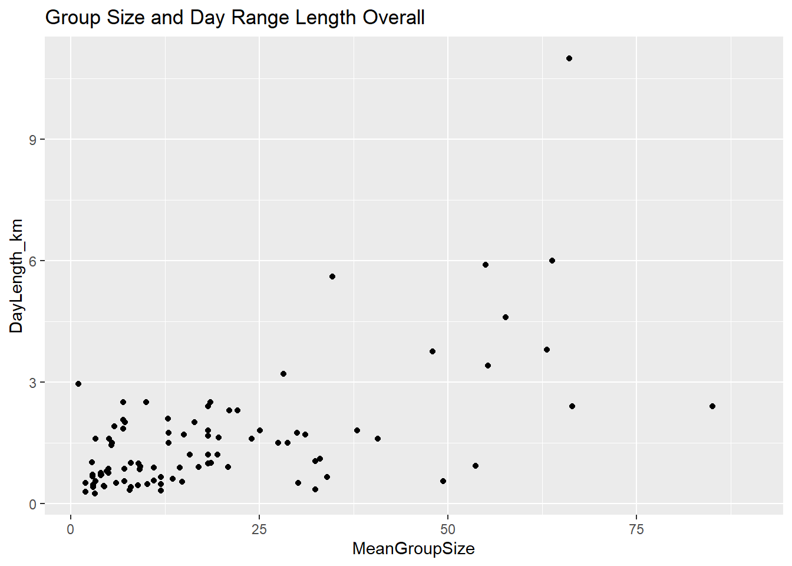
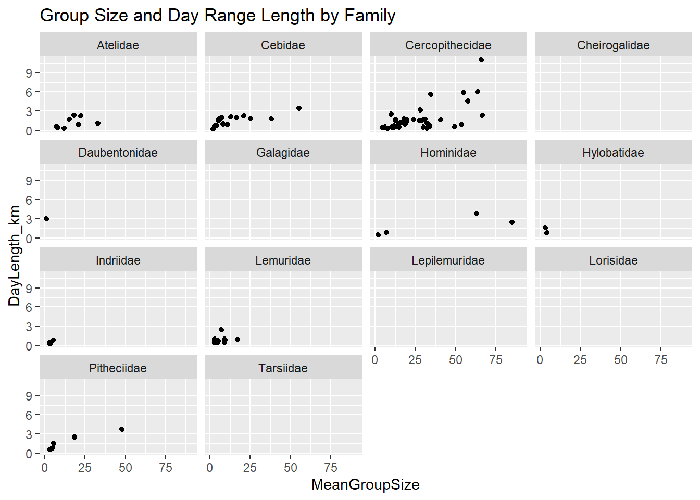
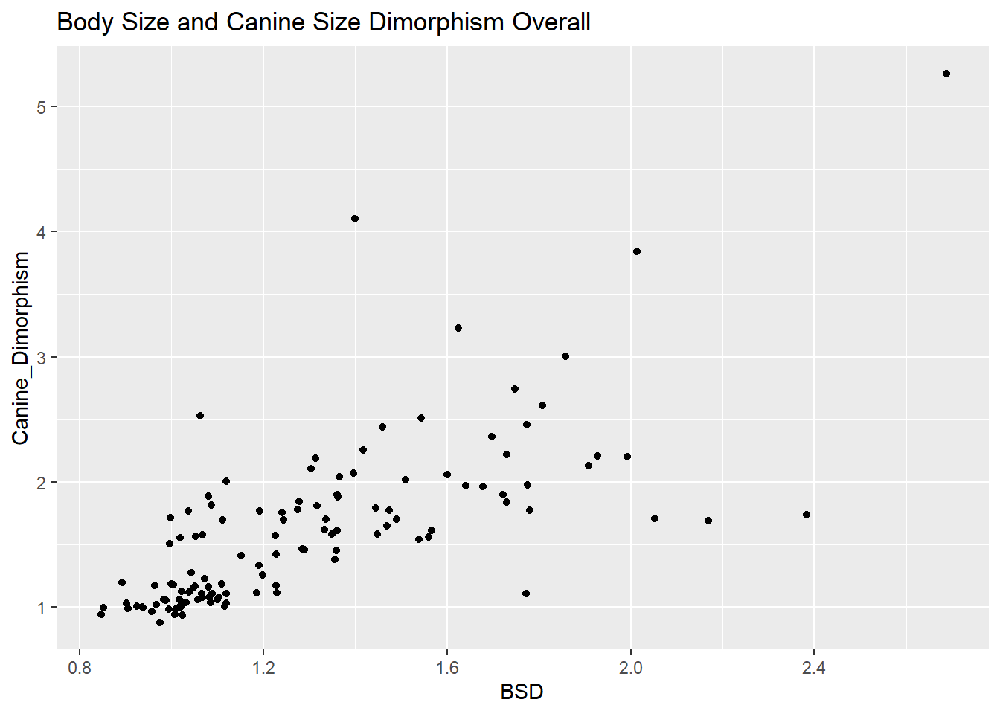
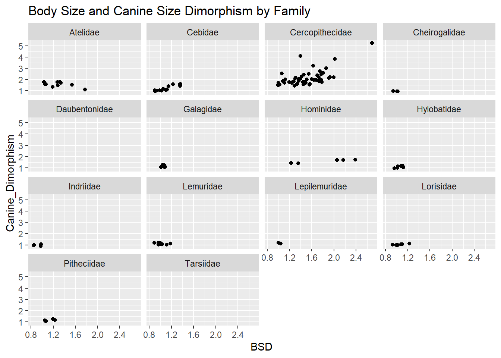
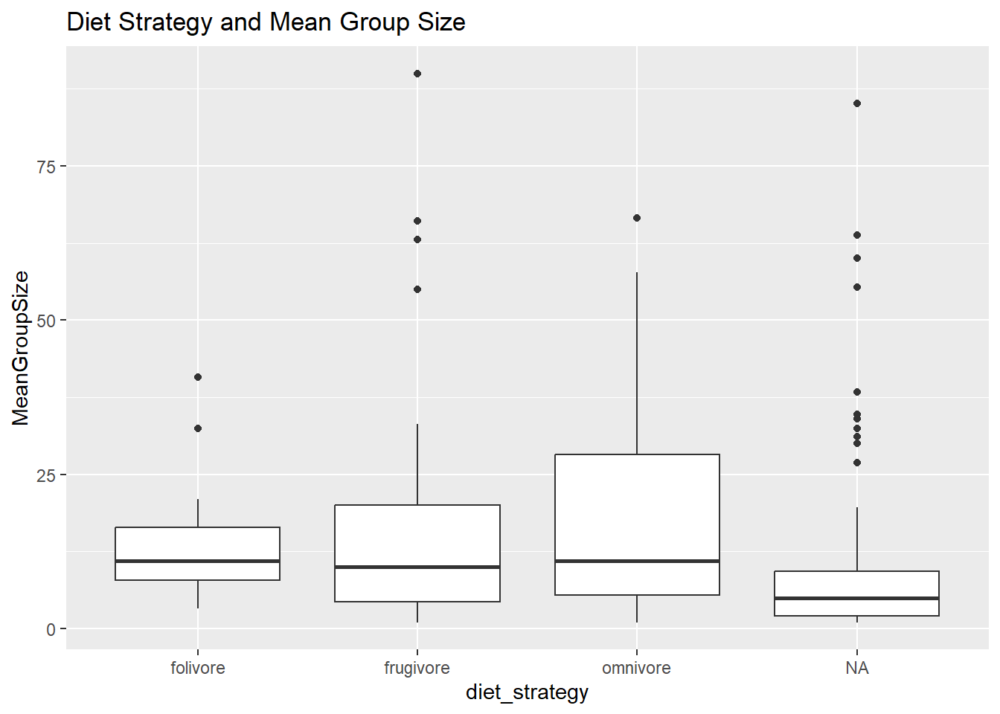

Scientific_Name Family Genus Species
1 Allenopithecus_nigroviridis Cercopithecidae Allenopithecus nigroviridis
2 Allocebus_trichotis Cercopithecidae Allocebus trichotis
3 Alouatta_belzebul Atelidae Alouatta belzebul
4 Alouatta_caraya Atelidae Alouatta caraya
5 Alouatta_guariba Atelidae Alouatta guariba
6 Alouatta_palliata Atelidae Alouatta palliata
Brain_Size_Species_Mean Body_mass_male_mean Body_mass_female_mean
1 58.02 6130 3180
2 NA 92 84
3 52.84 7270 5520
4 52.63 6525 4240
5 51.70 5800 4550
6 49.88 7150 5350
MeanGroupSize AdultMales AdultFemale GR_MidRangeLat_dd Precip_Mean_mm
1 NA NA NA -0.17 1574.0
2 1.00 1.00 1.0 -16.59 1902.3
3 7.00 1.00 1.0 -6.80 1643.5
4 8.00 2.30 3.3 -20.34 1166.4
5 6.53 1.37 2.2 -21.13 1332.3
6 12.00 2.90 6.3 6.95 1852.6
Temp_Mean_degC HomeRange_km2 DayLength_km Fruit Leaves Fauna
1 25.2 NA NA NA
2 20.3 NA NA NA
3 24.9 NA NA 57.3 19.1 0
4 22.9 NA 0.40 23.8 67.7 0
5 19.6 0.03 NA 5.2 73 0
6 23.7 0.19 0.32 33.1 56.4 0
Canine_Dimorphism Feed Move Rest Social
1 2.210 NA NA NA NA
2 NA NA NA NA NA
3 1.811 13.75 18.75 57.30 10.00
4 1.542 15.90 17.60 61.60 4.90
5 1.783 18.33 14.33 64.37 3.00
6 1.703 17.94 12.32 66.14 3.64
Establishing Variables
In this block of code I am creating 3 unique variables based on data in the data-wrangling csv. The variables are BSD (body size dimorphism, ratio of average male to average female body mass), sex_ratio (number of adult females to adult males), and DI (defensibility index, ratio of day range length to home range diameter
[1] NA 1.000000 1.000000 1.434783 1.605839 2.172414
DI <- d$DayLength_km/(pi * d$HomeRange_km2)head(DI)
[1] NA NA NA NA NA 0.5361009
Plotting the Data
In the following chunks of code, I am using the package {ggplot2} to create 3 different categories of plots (1) time spent moving and day range length, (2) group size and day range length, and (3) body size dimorphism and caninen size dimorphism. Each category has 2 plots, one for all the primate species in the data and one which is split by family using the facet_wrap() function.
#plot the datalibrary(ggplot2)library(dplyr)#Movement and day length overallggplot(data = d, mapping =aes(x = Move, y = DayLength_km)) +geom_point() +ggtitle("Movement and Day Range Length Overall")

#Movement and day length by familyggplot(data = d, mapping =aes(x = Move, y = DayLength_km)) +geom_point() +ggtitle("Movement and Day Range Length by Family") +facet_wrap(~Family)

#Group size and day range length overallggplot(data = d, mapping =aes(x = MeanGroupSize, y = DayLength_km)) +geom_point() +ggtitle("Group Size and Day Range Length Overall")

#Group size and day range by familyggplot(data = d, mapping =aes(x = MeanGroupSize, y = DayLength_km)) +geom_point() +ggtitle("Group Size and Day Range Length by Family") +facet_wrap(~Family)

#Canine Dimorphism and Body Dimorphism Overallggplot(data = d, mapping =aes(x = BSD, y = Canine_Dimorphism)) +geom_point() +ggtitle("Body Size and Canine Size Dimorphism Overall")

#Canine Dimorphism and Body Dimorphism by Familtggplot(data = d, mapping =aes(x = BSD, y = Canine_Dimorphism)) +geom_point() +ggtitle("Body Size and Canine Size Dimorphism by Family") +facet_wrap(~Family)

Creating a New Variable
Here I am creating a new variable called diet_strategy which will describe each species as a frugivore, folivore, or omnivore. I will then create a box plot showing the group size for each diet strategy.
library(tidyverse)d <- d %>%mutate(d, diet_strategy =ifelse(Fruit >=50, "frugivore", ifelse(Leaves >=50,"folivore", ifelse(Fruit <50& Leaves <50, "omnivore", NA))))#now we are going to use box plots to plot ggplot(data = d, mapping =aes(x = diet_strategy, y = MeanGroupSize)) +geom_boxplot() +ggtitle("Diet Strategy and Mean Group Size")

Arranging Family Average Brain Size
In this final chunk of code I will use the tools mutate(), select(), group_by(), summarize(), and arrange() from the package {dplyr}. This code will create a new variable called Binomial, trim the data frame down to just the variables Binomial, Family, Brain_size_species_mean, and Body_mass_male_mean. It will then group these variables by Family and determine the average value of Brain_size_species_mean and Body_mass_male_mean for each Family. These values will then be arranged in the data frame by increasing average brain size.